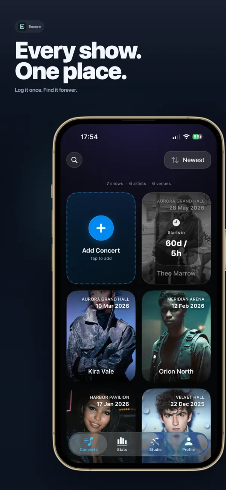
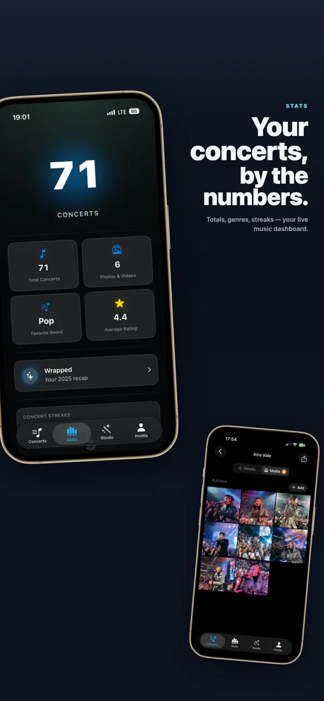
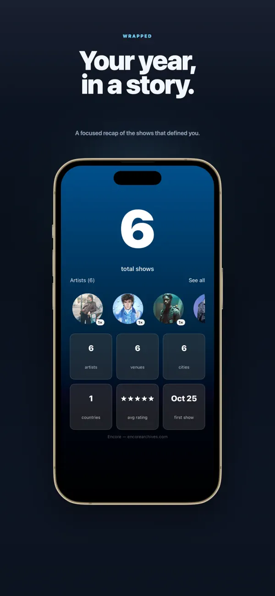
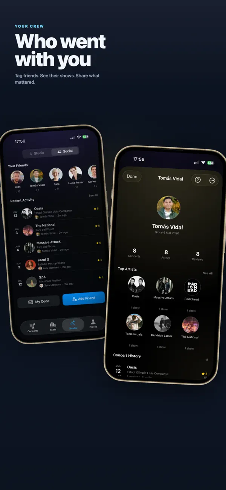
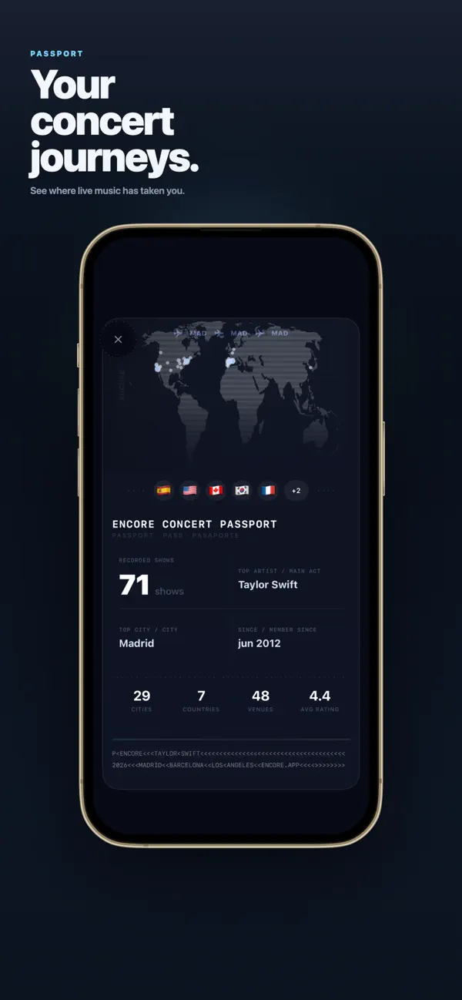
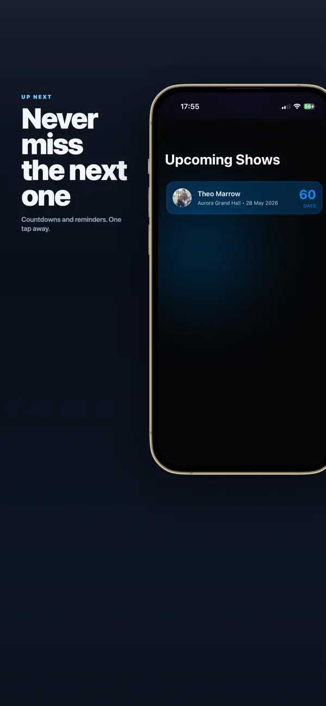

Encore: Concert Diary

Context: A hobby / side project—not my profession. I built it to ship a real app in my own time and experiment (including AI-assisted build and product loops).
Encore is an iPhone concert diary: log shows with photo & video, track stats over time, add friends, see upcoming dates, keep a passport-style history of venues and tours, and get a year-end wrapped built around the gigs you actually went to.
What I shipped (product + iOS)
As a side project I built it end-to-end in Swift / SwiftUI: product shape, navigation, persistence, polish, App Store cadence (metadata, review cycles, crash triage), and iteration from user feedback. Feature-wise that means a feed you want to scroll, stats that reward consistency, lightweight social features (follows / friends without building a full feed product), and flows that stay usable in loud venues and late nights after a show.
Revenue is past $2k from paying users. Post-launch work: tightening onboarding, fixing edge cases, and shipping again when usage shows something is confusing.
Sustained iteration
release → listen → fix → ship on a loop—same cadence as a product team, except I also handle support DMs, analytics, and crash triage.
Distribution (no paid acquisition)
There’s no paid acquisition budget, so growth is organic short-form content on the platforms where concert culture already lives—TikTok, Instagram, YouTube, and Facebook—with a network of accounts so Encore shows up in the same feeds people use for tickets, openers, and crowd videos. It’s deliberate and repetitive work; it’s how the app gets reach without ad spend.
Links
- Product (EN): encorearchives.com
- Product (ES): encorearchives.com/es
- App Store (US): Encore: Concert Diary
- Summary on the home page: CV / home
App Store gallery
Screens from the live App Store listing: feed, stats, wrapped, friends, passport, and upcoming shows.





